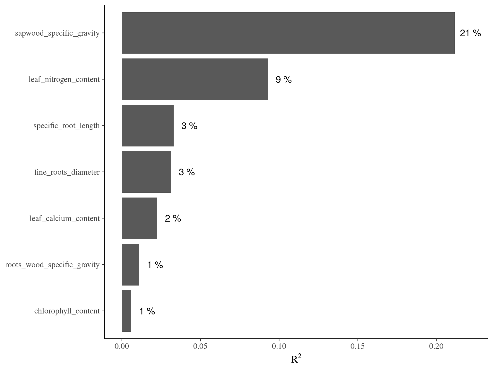
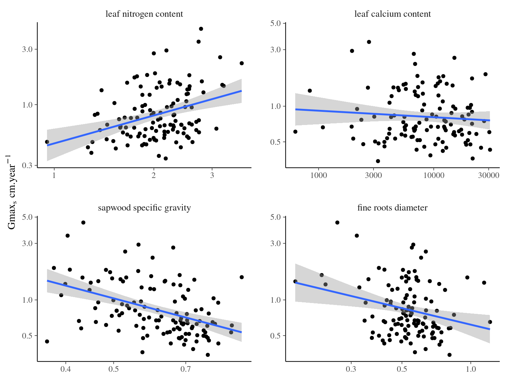
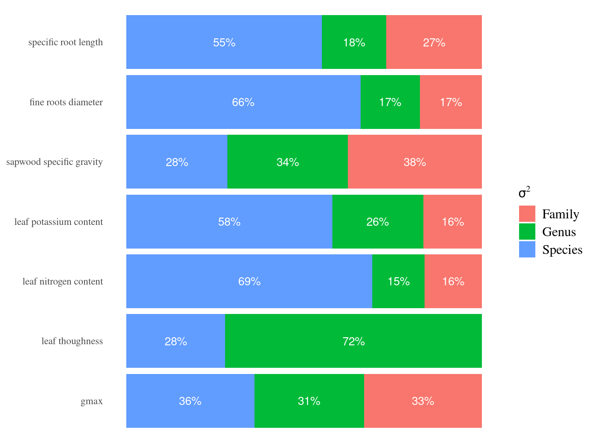

Chapter 5 Functional analyses
In this chapter, I quickly investigated effects of functional traits and weather on individual growth.
5.1 Methods
I used model to explore individual growth potential relation to functional traits at the individual or species level. I used either: (1) linear model with a step procedure, (2) boosted regression trees (BRT), and multimodel regressions.
5.2 Results
5.2.4 Comparisons
| trait | estimate | variance | variables importance | confidence interval | relative information |
|---|---|---|---|---|---|
| (Intercept) | -0.7816213 | 2.0941115 | 1.0000000 | 2.8683402 | NA |
| sapwood specific gravity | -1.3678075 | 0.0596388 | 1.0000000 | 0.4840554 | 17.2035451 |
| fine roots diameter | -0.7255254 | 0.1035483 | 0.9854490 | 0.6378260 | 4.6122100 |
| leaf calcium content | -0.1161366 | 0.0041831 | 0.9498977 | 0.1281976 | 6.7866922 |
| leaf nitrogen content | 0.5192040 | 0.0492812 | 0.9300546 | 0.4400190 | 23.9919356 |
| roots wood specific gravity | 0.0956563 | 0.0160163 | 0.4936813 | 0.2508487 | 1.5858695 |
| specific root tip abundance | -0.0654784 | 0.0079242 | 0.4694402 | 0.1764449 | 3.6813705 |
| specific root length | -0.0943854 | 0.0177412 | 0.4541774 | 0.2640113 | 4.6567901 |
| chlorophyll content | 0.1454967 | 0.0459709 | 0.4108398 | 0.4249837 | 0.7688924 |
| trunk bark thickness | -0.0570394 | 0.0076305 | 0.3945746 | 0.1731436 | 7.0948371 |
| leaf thickness | -0.0775376 | 0.0219760 | 0.2043521 | 0.2938361 | 1.0519650 |
| fine roots tissue density | -0.0075584 | 0.0009752 | 0.0798318 | 0.0618978 | 9.9688799 |
| leaf phosphorus content | 0.0001328 | 0.0001193 | 0.0739305 | 0.0216502 | 3.3287344 |
| leaf carbon content | -0.0286900 | 0.0214847 | 0.0716191 | 0.2905330 | 0.9764908 |
| specific leaf area | -0.0061923 | 0.0003864 | 0.0617365 | 0.0389624 | 0.9661545 |
| leaf potassium content | -0.0019407 | 0.0000625 | 0.0607915 | 0.0156695 | 3.7516849 |
| leaf thoughness | 0.0001891 | 0.0000708 | 0.0602357 | 0.0166739 | 2.2648056 |
| leaf area | -0.0007763 | 0.0000159 | 0.0595426 | 0.0079081 | 7.3091425 |
| Dependent variable | |||
|---|---|---|---|
| Predictors | Estimates | CI | p |
| (Intercept) | -1.07 | -2.75 – 0.61 | 0.209 |
| chlorophyll content | 0.28 | -0.12 – 0.68 | 0.162 |
| leaf nitrogen content | 0.62 | 0.30 – 0.94 | <0.001 |
| leaf calcium content | -0.14 | -0.25 – -0.04 | 0.008 |
| sapwood specific gravity | -1.50 | -1.96 – -1.03 | <0.001 |
|
roots wood specific gravity |
0.21 | -0.02 – 0.43 | 0.070 |
| fine roots diameter | -0.83 | -1.41 – -0.25 | 0.005 |
| specific root length | -0.23 | -0.46 – 0.00 | 0.055 |
| Observations | 116 | ||
| R2 / R2 adjusted | 0.408 / 0.370 | ||


